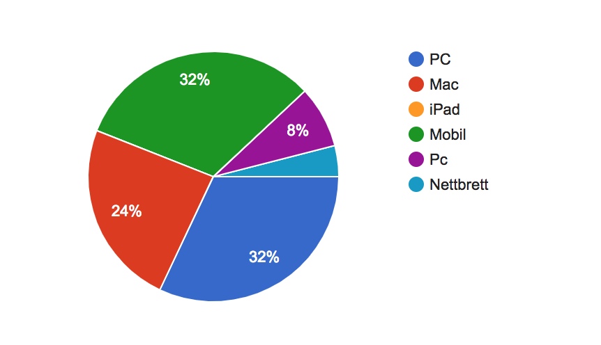
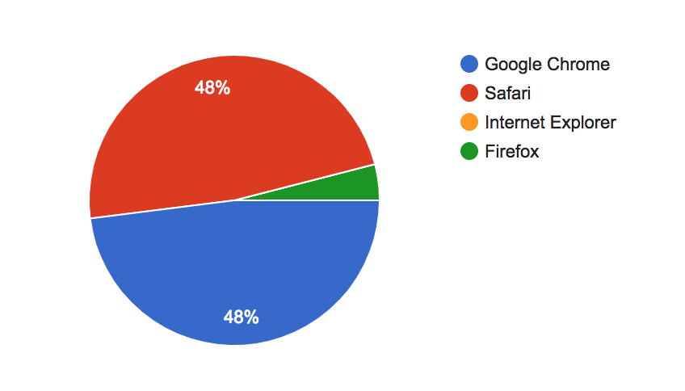

Project testing
11.11.18
Emilie Kalleberg, Vidar Michaelsen, Sarunas Juskenas, Anne Mosvold Ørke, Gunvor Huso
Prosjektet
- Navn på klient: Dugurd
- Kontaktperson: Jens Jenssen, eier
Testdokumentet
Link til Google Form: HER
Testerene våre fikk, etter å ha testet siden, spørsmål om hvilken aldersgruppe de tilhørte, der vi hadde fem alternativer. Dette gjorde vi for å sjekke hvilke problemer eller tanker ulike brukere hadde under testingen. Det neste spørsmålet var hvilket kjønn brukeren var. Videre spurte vi om hvilken enhet de testet på og hvilken nettleser som ble brukt. Så ønsket vi å få vite hva de synes om navigeringen på nettsiden, og hvor lett eller vanskelig det var på en skala fra 1-5. Neste spørsmål spurte testeren om hva de syntes om designet, dette også på en skala fra 1-5 hvor 5 var det beste. Videre ble testeren spurt om de fikk nok informasjon ut av siden, og om den var oversiktelig. Disse også på en skala på 1-5, hvor 5 var best. Til slutt fikk testeren muligheten til å legge igjen andre kommentarer de hadde til nettsiden.
Målgruppe

Dugurd er en nettside laget for alle og enhver. Vi trengte derfor testpersoner i alle aldersgrupper. Google Formen sendte vi til familie og venner i ulike aldersgrupper. Fordelingen kan man se ovenfor i sektordiagrammet. Som man ser har vi flest testere mellom 19 og 29 år, men vi har også klart å dekke alle aldersgrupper.
Testplatformer
 Det har vært stor variasjon i hvilke enheter folk brukte for å teste siden vår. Ca. 1/3 brukte PC og en stor andel brukte Mac. Selv om vi skrev at vi helst ville at de skulle teste på PC eller Mac var det også ca. 1/3 som brukte mobil. Noen få brukte nettbrett.
Når det gjelder nettleser, brukte de aller fleste Google Chrome eller Safari, 1 person brukte Firefox
Livetest
I tillegg til en Google Form, utførte vi også en livetest. Testpersonen er en 20 år gammel jente. Hun brukte Google Chrome på en PC. Det første vi så var at hun hadde en skjermstørrelse som gjorde at navbaren ikke var midtstilt. Neste problem vi oppdaget var når hun skulle søke jobb, da kunne hun fylle inn e-postfeltet uten en faktisk mailadresse. I tillegg oppdaget vi at hun ikke fikk med seg at man kan hovre over bildene og få opp tekst på siden 'Om Oss'.
Vi har jobba mye med å gjøre navbaren responsive. Det har vært vanskelig å få til, men på alle utviklerenes datamaskiner er denne nå responsive og på indexsiden midtstilt. For å fikse dette måtte vi både hatt bedre tid, og mer kunnskap. For å enkelt løse problemet kunne man brukt flexbox, men dette er ikke noe vi hadde lov til å bruke i dette kurset. Vi har også gjort endringer i HTML og JavaScript slik at man krever at inputfeltet til e-post faktisk inneholder en e-postadresse. På Om oss-siden kunne man nevnt funksjonen, eller så kan man se på det som en gulrot for de som utforsker siden mer.
Egentesting
Vi har også gått igjennom siden selv opp til flere ganger. Og har da sett at noen av bildene i slideshowet blir veldig zooma inn. Da vi oppdaget dette hadde vi dessverre ikke tid til å rette opp dette.
Oppsummering av tilbakemeldingen
Tilbakemeldingene fra brukerene var stort sett gode. 21/23 syntes siden var veldig lett å navigere seg rundt på (tilsvarte 5 i formet), hvor de resterende 2 som svarte på dette punktet mente at det var enkelt (tilsvarende 4 på skalaen) På spørsmålet om design syntes 16/23 at det var veldig bra (5), mens 7 synes det var bra(4). Om de fikk vite det de trengte på siden var det 16 som svarte 5 på skalaen, 5 som svarte 4 på skalaen, og 2 som svarte 3 på skalaen. 18 stykker mente at siden var 5 på skalaen av oversiktelighet, 4 mente at den var 4, og en mente at den var 3.
På kommentarene til slutt var det mye positive tilbakemeldinger, men også mye konstruktivt. De positive tilbakemeldingenene gikk ut på at det var et fint og oversiktelig design, at det var fint at valgte klokkeslett, antall og dato blant annet ble gjenvist øverst på neste side. Det ble også satt pris på at vi brukte dialekt på rettene. Noen syntes også at det var lett å manøvrere seg rundt på siden. Noen av de konstruktive tilbakemeldingen gikk ut på at det var tekniske feil på siden. Blant annet om at footeren falt helt ut til venstre, at bildene ikke kom opp, at når man ruller ned på siden og så trykker på hamburgermenyen vil siden ikke gå opp til toppen av seg selv, og at 'meny' i navigasjonsbaren ikke fungerer på telefon. Andre kommenterte på design, men mye av dette var vedrørende mobilversjon. Noen kommenterte at skrifttypen var vanskelig å lese på mobil, fordi den ble for tykk, men at den var grei på PC. Det var også ønsker om å bytte rekkefølge på menyvalgene i navigasjonsbaren, slik at 'søk jobb' ville ligge før 'kontakt oss' og 'om oss'. I tillegg til at det var savnet priser på menyene, og valg av dato for cateringbestilling. Det var også kommentar på at inputfeltene ble alt for brede for en stor PC-skjerm, og at dropdown-menyens underkategorier burde hatt mindre skrift.
Vår respons
Angående tilbakemeldingenene om de tekniske feilene som blant annet at footeren hadde flyttet seg, og at bildene ikke syntes, har vi rettet opp i dette. Vi har også lagt til dato på cateringsiden. I tillegg endret vi på responsiven til inputfeltene slik at de har fått en maksvidde.
Feilene vi kunne rettet ved en senere anledning er blant annet feilen som oppstår med hamburgermenyen. Dette kunne vi løst med JavaScript. Vi kunne også satt på priser i HTML på både restaurantmenyen og cateringmenyen. Rekkefølgen på menyen kan også enkelt endres i add.js. Og fontstørrelsen på underkategoriene til 'meny'-dropdownen kan enkelt endres i CSS. Hvis vi skulle hatt en mobilversjon, ville vi valgt en annen fonttype på denne, i tillegg til å tilrettelagt bedre for bruk på mobil.
Refleksjon
I løpet av prosjektet har vi lært mye om samarbeid i forhold til koding. Arbeidsfordelingen og prosjektvisjonen var klar fra starten av, og alle visste hva som var forventet av dem. Ethvert gruppemedlem kom med tilbakemeldinger til andre som gjorde feilsøking og fiksingen mye lettere. De mest effektive periodene av prosjektet var når vi var samlet rundt et bord og kunne troubleshoote og idémyldre sammen. Selv om koding ofte blir sett på som enstøingsverk, er det veldig positivt for prosjektet og koderen å ha andre dyktige kodere rundt seg.
Det at vi var veldig enige om hvordan vi ville at siden skulle bli gjorde det lett å enes om styling og layout. Idéen om at alt annet enn innholdet i den svakt gjennomsiktige tekstboksen skulle være universelt for alle sidene (bortsett fra indexen) kom tidlig i prosessen, og gjorde det lett å designe en universell utforming.